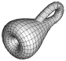
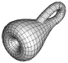

Crystallographic Topology

Crystallographic Topology

The Topology of Crystallographic Groups
and Simple Crystal Structures
Carroll K. Johnson
Michael N. Burnett
Oak Ridge National Laboratory
Australian Mirror Site
UK Mirror Site
Preprints and
Presentations
Crystallographic Topology 101 - A Tutorial / Virtual Course
Orbifold Atlas (under
construction)
Cubic Space
Group Orbifolds
What's New (Mar. 15, 1999)
Colleagues and Their Abstracts
Related Web Sites
Disclaimers
Sponsorship Notice
ORTEP-III Computer Program
Send comments, questions, suggestions, etc. to:
topology@ornl.gov
 Oak Ridge National
Laboratory Home Page
Oak Ridge National
Laboratory Home Page
Page last revised: